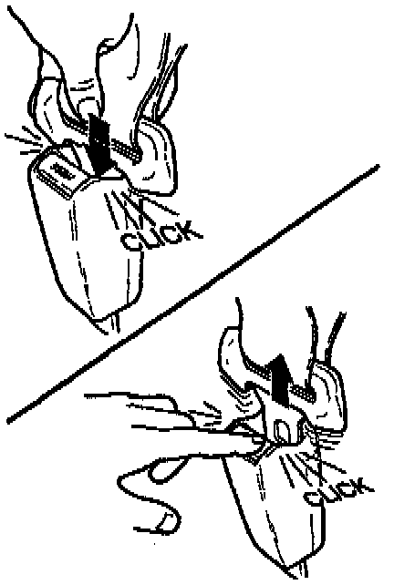

Corrective Action: Overview
Carefully inspect the front seat belt buckles for proper function and cracked or chipped release buttons. Replace or modify the buckles accordingly.
1. Push the seat belt latch plate into the buckle. They should latch together with a sharp click. Push the PRESS button to release the latch plate from the buckle. It should release with a sharp click and the latch plate should pop out of the buckle.
^ If both buckles latch and unlatch properly, continue to Button Inspection.
^ If either buckle does not latch or unlatch properly, go to Seat Belt Buckle Replacement.